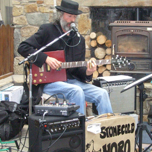

THE STONECOLD HOBO (SOLO)

Martin Cummins (The Stonecold Hobo) is a blues singer songwriter from Drogheda, Ireland.
Martin also designed and built his ‘Rhythm ‘n’ Blues Suitcase’ which provides simple percussion in the form of bass drum and tambourine. His sound is reminiscent of delta blues players from twenties and thirties but with a modern, heavier, electric twist. His live show features original material and re-interpretations of old blues standards. He is currently recording and producing a CD of original work which will be available in 2015. Martin is also touring with his band The Stonecold Hobos, who are a favourite on the festival circuit.
His influences include Led Zeppelin, Rory Gallagher, Muddy Waters, Robert Johnson, John Lee Hooker and ZZ Top amongst others.
www.facebook.com/Thestonecoldhobo